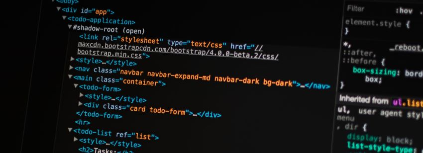

Post #1
Markdown é uma linguagem voltada para formatação de textos. Com ela, você não precisa apertar um botão na interface para deixar o texto em itálico ou sublinhado, por exemplo. Em vez disso, é só colocar alguns marcadores enquanto digita, como underlines (_) e asteriscos (*). Para entender melhor o que é e como usar markdown, leia mais. Em caso de sugestões, nos contate.